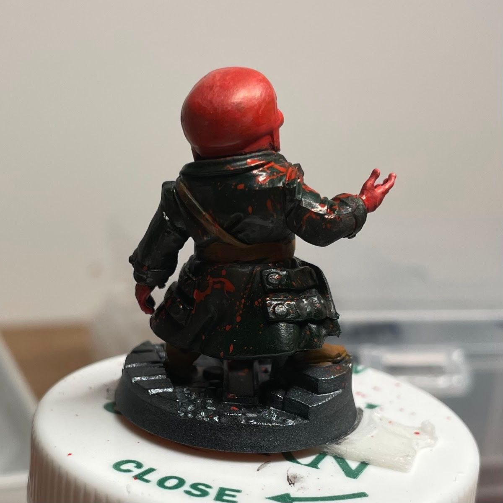
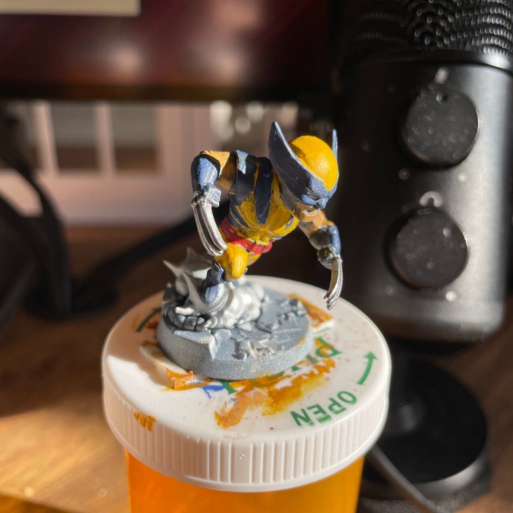

Most beginner guides hand you a list of twenty techniques. That's how you end up with one mini that has a little of everything and a lot of frustration. A better plan is to give each early mini one job, and let the next mini build on it.
The biggest tip: just get started
You improve with practice. That's it, that's the secret. Too many people wait until they feel "ready," which means they never start. You don't get ready and then paint. You paint, and that's how you get ready.
It also helps to remember that nothing here is permanent. You can always strip a mini and repaint it, so don't be precious about them. I painted a lot of my favorite characters early on, and honestly, they look like crap to me now. I still love them.
Why this matters
A beginner doesn't need ten techniques on mini number one. They need ten chances to make one or two decisions a little better. Repetition is what makes brush control, thinning and color choices feel automatic, and automatic is what frees your brain up for the fun stuff later.
The short version
Paint ten minis. Give each one a single focus. Photograph every one of them, even the rough ones, because a decent photo shows you what to fix next and proves you're improving.
A roadmap for the first ten
This isn't a rulebook. Swap the order to fit whatever minis you actually have.
- Clean basecoats. Thin paint, two coats, stay inside the lines. That's the whole assignment.
- Washes. Same as mini one, then a wash over everything. Watch how much shading you get for free.
- Drybrushing. Pick a mini with fur, rock, chainmail or rough texture and drybrush the raised edges.
- One simple highlight. Take each main color one step lighter and hit only the top edges.
- Color contrast. Choose a scheme with a clear warm-versus-cool or light-versus-dark split. See planning the palette.
- Metallics. Armor, weapons, gadgets. Drybrushed metallics are a great first try.
- Faces. Eyes are scary. Do them anyway. A dark line and a dot is enough at tabletop distance.
- Basing. Texture paint, sand or a couple of tufts. It makes a mini look finished faster than anything else.
- Photography. Use the budget photo setup and compare mini 9 to mini 1.
- One advanced idea. A glow, a blend, a bit of freehand. Just one.

Why photos come early
Most roadmaps treat photography as a "later" skill. I think it belongs near the start. A sharp, well-lit photo shows you thick paint, missed edges and flat highlights you can't see at arm's length. It also gives you something to look back on on the days you feel like you aren't getting better.
When I re-shot some of my earliest Marvel United minis once my photography caught up, the progress was obvious, and so were the spots that only hold up on the table.
What my own first steps actually looked like
I didn't follow a tidy list either. Looking back through my posts, the "firsts" came one at a time:
- First basing materials on Winter Soldier: some dirt texture and a few grass tufts. Nothing fancy, and it made him pop immediately.
- First kitbash on Mysterio, when his box was missing an entire arm.
- First time building off the sprue, first decals and first tries at airbrushing, all in the same month on my first space marines.
- First Speedpaints on Werewolf by Night, to see if a one-coat base could speed things up (it did).
- First mostly monochrome mini on Rhino, which turned into a surprise lesson in values.
Every one of those was a single new thing on an otherwise normal mini. That's the pattern worth copying.

If I could tell my 2023 self one thing, it would be the same thing at the top of this page: stop waiting, pick up the brush, and let the early ones be rough.
Tradeoffs
- One-piece minis vs. kits. "Paint what you get" minis like Marvel United let you skip assembly and practice painting. Multipart kits teach building but slow the painting reps down.
- Speed vs. polish. Early on, finishing matters more. A done mini teaches you more than a half-perfect one.
- Paint your favorite characters now, or save them? Now. They'll look rough to you in a year, and you'll still love them. If it really bugs you, strip and repaint.
Checklist
- Start this week, not when you feel ready
- Pick ten minis (favorites included)
- Write one focus word for each one
- Photograph each one when it's done
- Put mini 1 and mini 10 side by side
Next: learn why contrast beats perfect blends at the table.